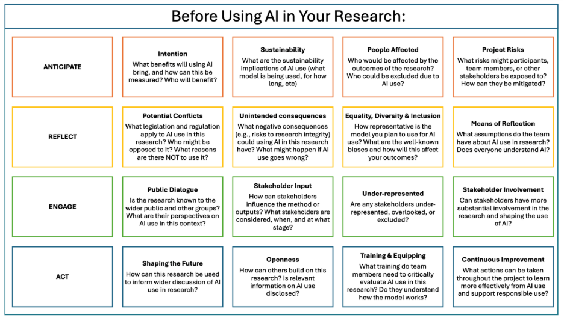

Ethics, Sustainability & Responsible AI Use
Responsible AI usage in research involves multiple dimensions from regulatory compliance to awareness of broader societal impact. While comprehensive frameworks exist, this section offers an overview of critical issues — Disclosure & Transparency, Privacy, Biases, Sustainability Concerns, and Key Regulations — with links to further resources if you want to learn more.
Jump to a topic
- Disclosure & Transparency When and how to disclose AI use, including publisher and UK funder guidance.
- Biases How AI systems amplify existing biases — with a real-world policing example.
- Privacy Private information in outputs, how inputs may be stored, and researcher safeguards.
- Sustainability Concerns Energy, water, carbon, and the supply chain — plus how AI might still be part of the solution.
- Key Regulations International frameworks, UK copyright and data protection, and guidance from your own institution.
Considerations for Responsible AI Use in Research and Innovation
The figure below presents a decision aid for researchers. It is an adapted version of the Responsible Research and Innovation (RRI) decision aid. The framework prompts researchers to anticipate potential benefits and risks, reflect on conflicts and consequences, engage with stakeholders, and act to shape responsible research and innovation. We present an adapted version of the prompts, building on guidance from the UK Research Integrity Office on responsible AI use. Each prompt targets one decision: whether and how to use generative AI in a specific project.
We encourage the behavioural research community to view AI adoption as an ongoing process of deliberation rather than a one-time decision, recognising that best practices will continue to evolve.

Open the full-size decision aid
{kind=link}
Read the decision aid as text
Anticipate
- Intention
- What benefits will using AI bring, and how can this be measured? Who will benefit?
- Sustainability
- What are the sustainability implications of AI use (what model is being used, for how long, etc)
- People Affected
- Who would be affected by the outcomes of the research? Who could be excluded due to AI use?
- Project Risks
- What risks might participants, team members, or other stakeholders be exposed to? How can they be mitigated?
Reflect
- Potential Conflicts
- What legislation and regulation apply to AI use in this research? Who might be opposed to it? What reasons are there NOT to use it?
- Unintended consequences
- What negative consequences (e.g., risks to research integrity) could using AI in this research have? What might happen if AI use goes wrong?
- Equality, Diversity & Inclusion
- How representative is the model you plan to use for AI use? What are the well-known biases and how will this affect your outcomes?
- Means of Reflection
- What assumptions do the team have about AI use in research? Does everyone understand AI?
Engage
- Public Dialogue
- Is the research known to the wider public and other groups? What are their perspectives on AI use in this context?
- Stakeholder Input
- How can stakeholders influence the method or outputs? What stakeholders are considered, when, and at what stage?
- Under-represented
- Are any stakeholders under-represented, overlooked, or excluded?
- Stakeholder Involvement
- Can stakeholders have more substantial involvement in the research and shaping the use of AI?
Act
- Shaping the Future
- How can this research be used to inform wider discussion of AI use in research?
- Openness
- How can others build on this research? Is relevant information on AI use disclosed?
- Training & Equipping
- What training do team members need to critically evaluate AI use in this research? Do they understand how the model works?
- Continuous Improvement
- What actions can be taken throughout the project to learn more effectively from AI use and support responsible use?